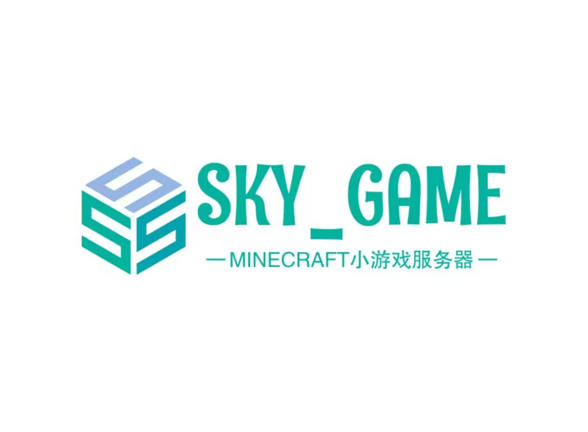

关于我们
SKY_GAME Network服务器是一个在Minecraft国际基岩版以及Minecraft国际Java版运营的小游戏服务器.
服务器拥有丰富多样的游戏，比如PVP游戏、休闲游戏以及原创小游戏等等.
丰富的小游戏可以使你在不同的游戏中体验到不同的乐趣和挑战.
我们还提供了一个友好的游戏社区环境，在我们的游戏社区中你可以和其他玩家交流、分享经验和建议.
此外，我们服务器还采用了部分安全措施，以保证服务器的平稳运行和玩家的游戏体验.
如果你是一位喜欢PVP或小游戏的玩家，那么你绝对可以试一试我们的服务器！
加入我们的社区，与其他玩家一起享受在SKY_GAME小游戏服务器的快乐吧！